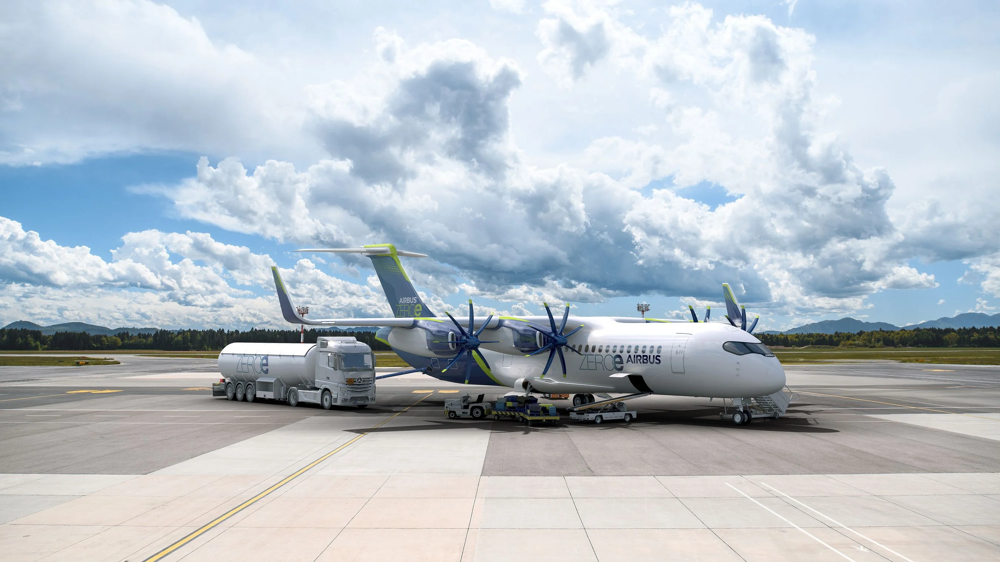

Two icons. One nation. Airbus rewrites aviation while the TGV redefines land speed — both made in France, both leading the world.
Founded in 1970 as a bold European consortium, Airbus set out to challenge the dominance of American manufacturers. The A300 — the world's first twin-engine widebody — changed aviation economics forever.
Today Airbus delivers over 700 aircraft per year across the A220, A320, A330, A350 and A380 families, serving 180+ airlines on every continent.
Full Airbus Story
The ZEROe family explores three revolutionary concepts — turbofan, turboprop, and blended-wing — all powered by cryogenic liquid hydrogen. Combustion produces only water vapour: zero CO₂, zero carbon.
With service entry targeted for 2035, this is the most ambitious sustainable aviation programme ever undertaken commercially.
Airbus was born out of political will and engineering ambition. France, Germany, Spain and the UK pooled resources to create an aerospace giant that now commands roughly 50 % of the global commercial aviation market.
Airbus is developing the world's first hydrogen-powered commercial airliner. Cryogenic liquid hydrogen, stored behind the rear pressure bulkhead, combusts to produce only water vapour — a true zero-emission flight.
vs 4h30 by car
vs 7h30 by car
Launched in 1981 between Paris and Lyon, the TGV shattered the idea that rail travel was slow. Its dedicated high-speed lines — called LGVs — allow trains to reach 320 km/h in daily commercial service.
The network now connects Paris to Bordeaux in 2h04, to Brussels in 1h22, and to London in 2h16 via the Channel Tunnel — making it the backbone of European sustainable mobility.
The TGV M (Avelia Horizon) is the latest generation — 20 % more capacity, 1 GWh energy recovered per year through regenerative braking, and fully modular interiors configurable for different markets.
Taking the TGV instead of a short-haul flight on the Paris–Lyon route cuts per-passenger CO₂ by 96 %. France has committed to banning short-haul domestic flights where TGV alternatives exist in under 2.5 hours.